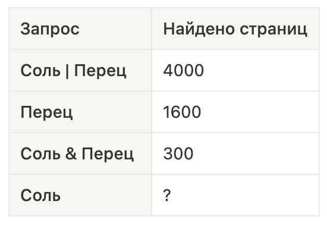

Типовые задания
ЗАДАНИЕ 1
Тип 1. Мемная картинка с котиком, которую вы скачали из интернета, имеет свой вес в 28 Кбайт. Как узнать сколько байт весит данная картинка?
Во первых, обратите внимание, что мы переводим из большей единицы измерения в меньшую (Кб больше байтов), а значит нужно умножать
28 Кб * 1024 байта = 28672 байт.
И наоборот, дана картинка весом в 28672 байт, надо узнать сколько Кбайт занимает данная картинка. Мы переводим из меньшего в большее (байты меньше Кб), а значит нужно делить.
28672 байта / 1024 байта = 28 Кбайт.
Самое сложное, что нужно здесь запомнить - это первая строчка таблицы. 1 байт в себе содержит 8 бит! В остальных случаях 1024.
Тип 2.Небольшой аудиофрагмет весит 9 байт. Сколько бит весит данный аудиофрагмент?
9 байт * 8 бит = 72 бита.
И наоборот, дан аудиофрагмент в 72 бита. Нужно узнать сколько байт весит данный аудиофрагмент.
72 бит / 8 бит = 9 байт.
ЗАДАНИЕ 2
Тип 1.От разведчика было получено следующее сообщение
0 0 1 0 0 1 1 1 0 1 1 0 1 0 0
В этом сообщении зашифрован пароль — последовательность русских букв. В пароле использовались только буквы А, Б, К, Л, О, С; каждая буква кодировалась двоичным словом по следующей таблице.
Согласно таблице, каждая буква кодируется двумя или тремя буквами. В нашей шифровке первая буква может состоять из кода 00 или из 001. Так как кода 001 в таблице нет, остается только вариант 00 – буква О.
0 0 1 0 0 1 1 1 0 1 1 0 1 0 0
О
Вторая буква может иметь код 100 или 10. Кода 10 так же нет в таблице, значит вторая буква Б.
0 0 1 0 0 1 1 1 0 1 1 0 1 0 0
О Б
Третья буква может быть только Л с кодом 111, так как 11 нет в таблице.
0 0 1 0 0 1 1 1 0 1 1 0 1 0 0
О Б Л
Четвертой буквой может быть только А – 01, так как 011 отсутствует.
0 0 1 0 0 1 1 1 0 1 1 0 1 0 0
О Б Л А
Следующей буквой может быть только К – с кодом 101, так как код 10 отсутствует.
0 0 1 0 0 1 1 1 0 1 1 0 1 0 0
О Б Л А К
И последнюю букву остается код 00, который соответствует букве – О.
В результате получим расшифрованное слово – ОБЛАКО, его и нужно записать в бланк ответов.
Тип 2.Разведчик передал в штаб радиограмму
• – – • • • – • • – – • • – • – –
В этой радиограмме содержится последовательность букв, в которой встречаются только буквы А, Д, Ж, Л, Т. Каждая буква закодирована с помощью азбуки Морзе. Разделителей между кодами букв нет. Запишите в ответе переданную последовательность букв. Нужный фрагмент азбуки Морзе приведён ниже.
Хочется уточнить, что в качестве ответа на задание 2 не всегда получается осмысленное слово, существующее в русском языке. Иногда ответом служит последовательность букв.
Согласно кодировочной таблицы, первой буквой может быть только буква А, поскольку кода • – – нет в таблице.
• – – • • • – • • – – • • – • – –
А
Второй буквой может быть Л (код - ) или Д (код – • •). Рассмотрим какие символы идут после каждой возможной буквы. После Л идет • • • –, что может соответствует одной из букв, а после Д идет • – • •, что тоже соответствует букве Ж.
На данном этапе можно рассмотреть символы дальше, но мы сменим нашу стратегию и начнем расшифровку с конца.
Последней буквой может быть только Л ( сочетания – – нет ни у одной буквы)
• – – • • • – • • – – • • – • – –
А Л
Предпоследней буквой может быть А ( • –) или Л(–) , рассмотрим символы идущие перед этими буквами. Перед А идет символ –, что может соответствовать букве из таблице, а перед Л идут символы заканчивающиеся на – • и не одна из букв кодировочной таблице не оканчивается на эту комбинацию. Делаем вывод – предпоследняя буква А.
• – – • • • – • • – – • • – • – –
А А Л
Для следующей буквы ситуация повторяется, с одной только разницей, что теперь перед буквой А встречается комбинация – • которой в таблице нет, а перед буквой Л может идти Д
• – – • • • – • • – – • • – • – –
А Л А Л
Четвертой справа буквой может быть только Д.
• – – • • • – • • – – • • – • – –
А Д Л А Л
Для пятой буквы справа ситуация с Л и А повторяется. Перед Л идет символ – • •, что может соответствовать букве из таблице, а перед А идут символы заканчивающиеся на – • и не одна из букв кодировочной таблице не оканчивается на эту комбинацию. Пишем буквы Л.
• – – • • • – • • – – • • – • – –
А Л Д Л А Л
Следующей буквой может быть Д или Ж. Проверим символу перед этими буквами. Буква Б нам не подходит, так как перед ней стоит три точки, на которые не заканчивается не один символ. Пишем букву Ж.
• – – • • • – • • – – • • – • – –
А Ж Л Д Л А Л
Буквы с кодом • • в таблице нет, значит оставшейся буквой может быть только Д,
В результате получим расшифрованное слово – АДЖЛДЛАЛ, его и нужно записать в бланк ответов.
Тип 3.Ваня шифрует русские слова, записывая вместо каждой буквы её номер в алфавите (без пробелов). Номера букв даны в таблице.
Некоторые шифровки можно расшифровать несколькими способами Например, 311333 может означать «ВАЛЯ», а может — «ЭЛЯ», а может — «ВААВВВ».
Даны 4 шифровки:
9 8 2 8 2 1 0
5 1 0 3 1 1 5
1 2 1 3 1 3 1
3 1 0 2 0 3 0
В этом задании нужно найти шифровку расшифровывающуюся только 1 способом, если на каком то этапе обнаружим двойственность расшифровывания – можем смело бросать ее и переходить к другой.
В шифровке 9828210 первым символом может быть З, поскольку буквы с номером 98 нет. Второй буквой может быть Ж, кода 82 нету. А вот в качестве третьего символа может выступать код 21 и 2. Обнаружилась двойственность, шифровка нам не подходит. Переходим к следующей.
5 1 0 3 1 1 5
Первой буквой может быть только Д, кода 51 нет. Второй буквой – И, потому, что если мы возьмем код 1, то следующая буква должна начинаться на ноль, а таких кодов нет. Третьим символом может быть буква с кодом 3 или 31. Обнаружилась двойственность, шифровка нам не подходит. Переходим к следующей.
1 2 1 3 1 3 1
Эта шифровка нам не подходит, так как первой буквой может быть А и К.
Остается только 4 шифровка.
На этом разбор первого задания ОГЭ по информатике закончен, если остались вопросы, задавайте их в комментариях. Подписывайтесь на мой канал.
3 1 0 2 0 3 0
Первой буквой может, быть только В. Если мы возьмем код 31, то следующая буква должна начинаться на ноль, а таких кодов нет. Второй буквой будет И . Рассуждая аналогично получим, оставшиеся буквы Т и Ь.
В результате получим расшифрованное слово – ВИТЬ, его и нужно записать в бланк ответов.
ЗАДАНИЕ 3
Тип 1.Напишите наименьшее число x, для которого истинно высказывание:
(x > 16) И НЕ (x нечётное).
В этом задании ключевыми словами являются : НАИМЕНЬШЕЕ и ИСТЕННОЕ. Упростим выражение избавившись от ИНВЕРСИЯ (НЕ). Скобку (x>16) перепишем без изменения, а (x нечётное) заменим на противоположное значение (x чётное). Тем самым мы записали эквивалентное условие, но уже без логической операции ИНВЕРСИЯ.
(x > 16) И (x чётное)
Между двумя этими условиями стоит логическая операция КОНЪЮНКЦИЯ (И). Она будет истинна только в том случае, когда и правая и левая часть будут одновременно истины.
Начертим числовую ось, обозначим на ней точку 16. Заштрихуем область, для которой условие Х>16 будет истинно.
Рассмотри точку 16, точка 16 не больше 16 – выражение ложно. Значит и все составное выражение становится ложным. Эта точка нам не подходит.
Точку 15 и меньше, рассматривать не стоит, так как они не соответствуют условию Х>16.
Рассмотри точку 17, она соответствует условию 17>16, а второму (17 -чётное) нет. Эта точка нам не подходит.
Перейдем к точке 18, она соответствует условию 18>16,и второму (18 - чётное) Эта точка нам не подходит.
Нам нужно найти минимальное, учтем что все точки лежащие правее 18, будут больше. В ответ запишем число 18.
Тип 2.Для какого целого число Х, ложно высказывание: (x > 10) ИЛИ НЕ (x >9)?
В этом задании ключевыми словами являются : ЦЕЛОЕ и ЛОЖНОЕ. Аналогично упростим выражение избавившись от ИНВЕРСИЯ (НЕ), заменим (x > 9) на (x <= 9). Отдельно обращаю ваше внимание на инверсию операций сравнения.
(x > 10) ИЛИ НЕ (x <=9)
Если у нас было строгое неравенство больше (>) или меньше(<), то в результате инверсии не только поменяется знак на противоположный, но и добавится обязательно знак равно. И на оборот, если неравенство было нестрогим больше или равно (>=) или меньше или равно(<=),то в результате инверсии поменяется знак на противоположный и уберется знак равно.
Между двумя этими условиями стоит логическая операция ДИЗЪЮНКЦИЯ (ИЛИ). Она будет ложна только в том случае, когда и правая и левая часть будут одновременно ложны.
Нарисует числовую прямую и отметим на ней точки 9 и 10. Точку 9 мы не закрашивает, в точку 10 закрашиваем, так как там присутствует знак равно, т.е. нестрогое неравенство. Заштрихуем область для которой истины наши условия.
Нужно найти число, для которого выражение задачи будет ложно, значит нас интересует не закрашенная область. При условии целого числа, можно взять только 9 или 10.
Число девять нам не подходит, потому что для него будет истинно условие (x <=9).
Рассмотрим число 10. Оно не больше 10 и не меньше 9. Оба условия не выполнилось, значит 10 наше искомое число. Ответ 10.
ЗАДАНИЕ 4
Тип 1.
Нужно найти кратчайший путь из пункта А в пункт Е, для этого надо перебрать все пути. Для того, чтобы не упустить ни одного варианта дороги, построим дерево:
Всего получилось 5 дорог из пункта А в пункт Е. Нам нужен кратчайший. Видим, что это четвертый путь, равный 5. НО! В задаче есть дополнительное условие: в ответ нужно записать протяженность кратчайшего пути, проходящего через С, а это первый путь, равный 8. Поэтому в ответ пишем число 8.
2 способ. Практически тоже самое, но запись идет не в виде дерева, а в строчку. Учащиеся по-разному выбирают - кому как удобно.
A-B-C-D-E=1+2+3+2=8
A-B-D-E = 1+5+2=8
A-C-D-E=4+3+2=9
A-D-E=3+2=5
A-E=7
Видим, что только две дороги проходят через пункт С. Кратчайшая из них равна 8.
ЗАДАНИЕ 5
Тип 1.
Нам предлагают найти неизвестное число b в команде 2, если известна программа из пяти команд и ее результат- число 9 переводится в число 53. В следующем рисунке зафиксированы этапы решения задания. Ход рассуждений смотри после рисунка:

Выписываем из условия строку последовательности команд программы (красный шрифт).
Ниже, указываем начальное число и под каждой программой подписываем соответствующее действие (синий шрифт). В конце подписываем конечное число.
Решаем уравнение.
Получили ответ: 5, что подходит под условие задачи: натуральное число, больше или равно 2. Всё решение состоит из одного уравнения.
Тип 2.
В данном варианте, нам предлагают самим составить последовательность двух команд , если известно их значение и один из результатов выполнения этой программы (из числа 1 получается 25). Обратите внимание на пояснение, в котором говорится, что программа должна содержать не более пяти команд. Опять предлагаю вам подробное решение на картинке и ход рассуждений ниже.
Для наглядности, проставляем номера действий команд (№1, №2 ...№5.) Ниже и левее подписываем начальное число из условия, ниже и правее - конечное число.
Начинаем подбирать действия команд (из верхней таблицы), стремясь получить в ответе конечное число.
Действие №1: Один(начальное число) возводить в квадрат смысла нет, поэтому, к начальному числу прибавляем 3 (красный шрифт), получаем 4.
Действие №2: Пытаемся быстрее получить число ближе к конечному, поэтому возводим 4 в квадрат (красный шрифт), получаем 16.
Действие №3 , 4, 5: 16 возводить в квадрат бессмысленно, так как квадрат 16 намного больше нужного конечного числа, поэтому в действиях №3,4,5 прибавляем тройки (красный шрифт). Получили нужное конечное число.
Для получения ответа, под каждым действием подписываем соответствующий номер команды (синий шрифт), сверяясь с первой таблицей.
Получаем последовательность команд - 21222, это и есть ответ.
Работа веб-программиста требует умения разбираться в требованиях клиентов и создавать пользовательский опыт, удовлетворяющий их потребностям. Они также заботятся о тестировании, отладке и оптимизации веб-приложений для обеспечения высокой производительности и отзывчивости.
ЗАДАНИЕ 6
Тип 1.
После ввода значений идёт условие, в котором проверяются значения этих двух переменных. Тут сказано: “Если значение переменной S больше двух И значение переменной T меньше пяти, то выведи сообщение ‘YES’, в любом другое случае выведи сообщение ‘NO’”. После данного перевода нам становится очень легко понимать, когда напечатается “NO”, а когда “YES”.
Посмотрим на входные данные и определим, когда и что будет выводиться на экран.Исходя из этого можем легко подсчитать необходимое количество результатов. В задании обычно спрашивают, сколько было выведено сообщений с “NO” или с “YES”. Здесь же у нас с отрицательным ответом - 4, а с положительным - 5.
ЗАДАНИЕ 7
Тип 1.
Доступ к файлу tiger.doc, находящемуся на сервере zoo.org, осуществляется по протоколу http. Фрагменты адреса файла закодированы буквами от А до Ж. Запишите последовательность этих букв, кодирующую адрес указанного файла в Всемирной сети.
Начнём с того, что запишем всё в нужном порядке (протокол-сервер-домен-файл/папка): http://zoo.org/tiger.doc Исходя из этого, ничего теперь не мешает нам записать ответ: ЖГБЕВДА
Тип 2.На месте преступления были обнаружены четыре обрывка бумаги. Следствие установило, что на них записаны фрагменты одного IP-адреса. Криминалисты обозначили эти фрагменты буквами А, Б, В и Г.
Для данного типа задания мы уже знаем главные условия составления IP-адреса. Следовательно, если будем придерживаться этих правил, то сможем составить его правильно. А дальше все задание сводится к составлению «пазлов», соединить в правильном порядке «кусочки».
Попробуем сложить — БВГА. Получилось 116.213.234.243. Посмотрим на выполнение наших условий:
Четыре числа - ДА
Числа разделены точкой - ДА
Числа находятся в интервале от 0 до 255 - ДА
Получается, мы нашли исходный адрес.
Тип 3.Существуют задания и с адресом почтовой почты.На сервере GorodN.ru находится почтовый ящик wait_for_mail. Фрагменты адреса электронной почты закодированы буквами от А до Е. Запишите последовательность букв, кодирующую этот адрес.
Для решения данного задания необходимо знать одно важное правило — последовательность:адрес_почты(пользователя)@сервер Зная данную информацию, можем легко составить правильный ответ — wait_for_mail@GorodN.ru. Следовательно, правильный ответ записывается в виде — ДВБЕАГ.
ЗАДАНИЕ 8
Тип 1.Даны три поисковых запроса с количеством выданных страниц. Необходимо определить, сколько будет найдено страниц по запросу “Соль”.

Для начала нарисуем круги Эйлера для наглядности.
С зонами мы можем совершать лишь два действия: сложение и вычитание. При сложении зоны добавляются в группу, при вычитании из группы убирает зоны. Найти зелёную и синюю зону можно из других: Соль | Перец - Перец = 2400 (Зелёная) - здесь из зелёной, синей и красной вычитается синяя и красная Соль & Перец + “Зелёная” = 2700
Тип 2.Даны три поисковых запроса. Необходимо найти количество страниц при запросе “Вега & Арктур”.
В данном задание уже три множества, значит необходимо добавить ещё один круг. Добавление круга влечёт за собой добавление и дополнительных зон. Попробуем изобразить.
Попробуем найти малиновый цвет, а после найдём нужные цвета из Вега & ( Сириус | Арктур). Для этого сделаем следующие действия: Сириус & Вега - Сириус & Вега & Арктур = 260 - 119 = 141 (малиновый) Вега & ( Сириус | Арктур) - “Малиновый” = 467 - 141 = 326 (Вега & Арктур)
ЗАДАНИЕ 9
Тип 1.На рисунке — схема дорог, связывающих города А, Б, В, Г, Д, Е, Ж, К, Л, М, Н, П. По каждой дороге можно двигаться только в одном направлении, указанном стрелкой. Сколько существует различных путей из города А в город П, проходящих через город Е?
Для начала отметим через какой населённый пункт нужно ОБЯЗАТЕЛЬНО пройти и через какие населённый пункты нам идти не нужно (т.к. они не проходят через нужный населённый пункт).Далее будем наносить веса для каждого населенного пункта.Вес с входящих городов складывается (в город Е).Вес с городов сохраняется, даже если в дальнейшем он расходится по другим населённым пунктам (из города Ж в К,Н). Далее поочерёдно суммируем веса. Сначала в город “М”, а потом в город “Л”.
После этого останется лишь просуммировать веса для города “П” и получить ответ.
Достаточно быстро получили правильный ответ — 21 (количество путей из города А в город П через населённый пункт Е). Если выписывали все возможные пути, то это заняло бы больше времени и, возможно, допустили ошибку.
ЗАДАНИЕ 10
Тип 1.Необходимо перевести число 452 из семеричной системы счисления в десятичную.
Тип 2.Необходимо перевести число 345 из десятичной системы счисления в троичную
Начинаем делить (делим нацело, записывая остаток):
345 / 3 = 115 (остаток 0)
115 / 3 = 38 (остаток 1)
38 / 3 = 12 (остаток 2)
12 / 3 = 4 (остаток 0)
4 / 3 = 1 (остаток 1)
Осталось записать правильно ответ начиная с последнего полученного числа, далее остатки снизу вверх.
Исходя из данного решения, получаем следующий ответ в троичной системе счисления 110210